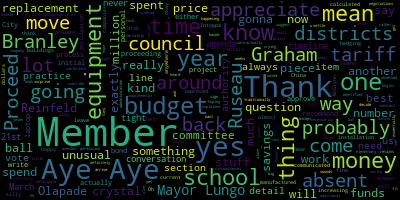

AI-generated transcript of Regular MSC Meeting
English | español | português | 中国人 | kreyol ayisyen | tiếng việt | ខ្មែរ | русский | عربي | 한국인
Back to all transcripts
[SPEAKER_06]: Mic, check one, two. Mic, check one, two.
[Lungo-Koehn]: Testing one, two. Testing one, two.
[Edouard-Vincent]: Testing.
[SPEAKER_07]: Okay.
[Lungo-Koehn]: Good evening. The 20th regular meeting of the Medford School Committee will come to order. We have executive session at 5 p.m. leaving practice time and regular meeting at 6 p.m. The meeting can be viewed live on the Medford Public Schools YouTube channel through Medford Community Media on your local cable channel Comcast channel nine, eight or 22 and Verizon channel 43, 45 or 47. Participants can log or call in by using the following Zoom link. Meeting ID is 980-6541-2176. A special holiday performance by the Medford High School String Orchestra and Middle School String Ensemble will be held outside the chambers prior to the meeting. Roll call, please, Member Ruseau.
[Ruseau]: Member Branley?
[Branley]: Here.
[Ruseau]: Member Graham?
[Graham]: Here.
[Ruseau]: Member Intoppa is absent. Member Olapade?
[Olapade]: Here.
[Ruseau]: Member Reinfeld?
[Reinfeld]: Present.
[Ruseau]: Member Ruseau, present. Mayor Lungo-Koehn?
[Lungo-Koehn]: Present. Six present, one absent. If we all may rise to salute the flag.
[SPEAKER_07]: I pledge allegiance to the flag of the United States of America, and to the Republic for which it stands, one nation, under God, indivisible, with liberty and justice for all.
[Lungo-Koehn]: We have executive session. Upon a motion to enter executive session pursuant to General Laws 30A, Section 21A. to conduct a strategy session on the basis that an opening meeting may have a detrimental effect on the bargaining positions of the Medford School Committee. Specifically, the Medford School Committee will be discussing ongoing collective bargaining negotiations with the Massachusetts Teacher Association, the MTA. Medford School Committee will reconvene in public session immediately following the conclusion of the executive session, approximately 6 p.m. Is there a motion to go into executive session? I remember Reinfeld seconded by member Branley. Roll call, please.
[Ruseau]: Member Branley, yes. Member Graham, yes. Member Ntab is absent. Member Olapade, yes. Member Reinfeld, yes. Member Ruseau, yes. Mayor Lungo, current.
[Lungo-Koehn]: Yes. Six in the affirmative, zero in the negative. Motion is passed. We'll go into executive session.
[SPEAKER_06]: Mike test one, two. Okay, I figured it out Brianna. Yeah, the microphone wasn't plugged in all the way. Mic test one, two. Mic test one, two. Mic test one, two. Mic test one, two.
[SPEAKER_07]: Thank you.
[Lungo-Koehn]: We'll just ask for everybody to be quiet, while we have Miss Chang and the orchestra. Play us some beautiful tunes, and then we'll get right to it. Here we go.
[SPEAKER_07]: Okay. Yeah. Yeah. Yeah. Okay. Hello. Yeah. Any other questions? Yeah. Okay. do do Okay.
[Lungo-Koehn]: Beautiful. Thank you so much. Great way to start off our meeting. We have our consent agenda, approval of bills and payrolls, approval of capital purchases, approval of grants, Brookline Bird Club in the amount of $750 to the McGlynn Elementary School Library, approval of field trips, approval of meeting minutes from December 22nd, no, December 2nd, 2024, and special meeting December 11th, 2024. Is there a motion on the floor for approval? If I remember, Lopate seconded by? Member Branley, all those in favor? All those opposed? Consent agenda is approved. We do not have any reports of subcommittee. We have our report of our superintendent, updates and comments. I'll turn it over to Dr. Maurice-Edouard-Vincent.
[Edouard-Vincent]: Good evening, and I echo the mayor's sentiments. Wonderful job to our orchestra students. Absolutely fabulous. Thank you, Ms. Cheng. Thank you, Ms. Suzanne Fee, our Director of Fine Arts, for a wonderful, wonderful presentation, performance, mini concert this evening. Thank you. So good evening. I have brief remarks this evening, but I would just like to share those remarks. First, I would like to say thank you for all of those joining us tonight at this evening's meeting. Since we last gathered here at City Hall, The Medford School Committee and I announced our mutual agreement that I will be departing on Friday, January 17th, 2025. Serving as a superintendent of schools for the past seven years in the same community that I was raised in has been my proudest professional achievement and such a blessing. The district will remain in very strong hands with Dr. Galusi's interim appointment and I look forward to supporting both her and the district during this transition period. Also, amongst news happening across the district, I would like to thank all those who have donated to our various December holiday donation drives in our school community. Any donation, no matter how small, goes a long way in impacting those around us this holiday season. If you are interested in giving, please contact your school or school PTO to learn about how you can impact your school community. Also, on Thursday, December 5th, it was a very special day at the Roberts Elementary School. as we welcomed Ernie Bach Jr. and the Music Drives Us organization to celebrate their donation of $60,000 worth of musical instruments and equipment. That's important, especially since we just had a wonderful orchestra concert and our wonderful band is here. The donated musical equipment included violins, ukuleles, risers, performance risers that the students can stand on when they perform, a U1 piano, a beautiful, beautiful Yamaha piano and an outdoor keyboard and much more. The generous gift is one of the largest donations ever given to a public school in the organization's history. As part of the ceremony, Ernie Bach Jr., the Music Drives Us team, city leaders, and district administrators were treated to a delightful musical performance by our Roberts students. The musical teacher, Mr. Stern at the Roberts School, the students, and the staff are all so very thankful for the new, beautiful musical equipment and are already hard at work practicing for a future concert. Congratulations to all of them. Additionally, I would like to take this opportunity to celebrate all our grade six through 12 band and orchestra students who performed last week at our winter shows. Our band students, some of them who are here with us tonight, wild audiences with their holiday spirit and beautiful symphony on Wednesday night while our orchestra students impressed the audience on Thursday. As we look ahead to the upcoming winter break, the time off allows us all a welcome opportunity to spend quality time with our families and friends when celebrating the richness of this festive season. May the winter solstice, or Yule, the warmth of Christmas, The light of Hanukkah, the unity of Kwanzaa, and all our respective holidays bring you and those close to you happiness, love, and togetherness. I hope everyone with us tonight and those listening online have a happy holiday season and a terrific new year. Please note that there will be a half day on Friday, December 20th for all students and staff to begin the holiday break. Medford Public Schools will be closed for all students and teachers beginning on Monday, December 23rd and will reopen on Thursday, January 2nd. As a reminder, for those of you in the community who are getting ready for kindergarten registration, that will begin on Thursday, January 2nd. This is the earliest kindergarten registration has ever opened as the district eagerly anticipates welcoming future students to Mustang Nation. For those of you who are interested in learning about the process, please visit our kindergarten registration page on our website. Building Bridges to Kindergarten, our presentations where parents learn more about kindergarten across our four elementary schools and answer any questions they may have. Those events will take place in January, February, and March, more to come. Again, I want to thank Ms. Sophia Chang today for the wonderful concert, Ms. Suzanne Fee, our Director of Fine Arts, who is coordinating all of our arts programming, So during tonight's meeting, I am very excited that we're going to be able to welcome and recognize our students for their marvelous extracurricular achievements. Both our men's golf team and varsity football team earned GBL championships this fall. Yes, worthy of a round of applause. Congratulations. Additionally, our Mustang Marching Band won the NESBA Division II title for the second year in a row. We look forward to celebrating all of you and your accomplishments later this evening. Additionally, this evening, we are thrilled to welcome our Director of School Counseling and Behavioral Health, Ms. Stacey Shulman, as she introduces our newest member of Mustang Nation, beautiful, beautiful Kelsey, our assistance dog. Lastly, amongst other items on the agenda, we will hear from Dr. Cushing about the ongoing HVAC project happening in our schools. Thank you.
[Lungo-Koehn]: Thank you, Dr. Edward-Vincent. We know the kids are very important, but there's a little fur baby right there we're going to announce first. So come on up, Ms. Stacey Shulman, Director of School Counseling and Bay Behavioral Health.
[Shulman]: Good evening. Can you hear me now? Yes. I'm Stacey Shulman, the director of school counseling and behavioral health. And I am pleased to introduce Kelsey, our new assistance dog for Medford Public Schools. You can see her right at my feet there. Perfect. Kelsey is a two-year-old black lab who has been born and raised exclusively under the care of NEADS. an organization who trains service and assistance dogs. I began the application process for a school assistance dog in 2018 and was matched October of this year. COVID extended this timeframe, but the process is very lengthy. In order to proceed with a match, needs had to approve my application, which required interviews, letters of recommendation, and the sign off by my physician showing I was physically and mentally capable of taking on this responsibility. Kelsey has been in training her entire life until now two full years. I was trained at the needs campus as well where I stayed every day overnight for a week and a half. I am pleased to announce Kelsey and I both passed our certification exams and are now recognized through Assistance Dog International as a certified pair. She knows about 50 different commands from general obedience to complex tasks based work, such as getting tissues and turning the pages of a book. She is truly an amazing dog. Kelsey and I have been in many of the schools so far getting acclimated to her new job and our new partnership. She has already worked with dozens of students for comfort and joy and visited a few classrooms. She's also worked with many of our staff. Councilors at MHS can arrange for students to have a visit with Kelsey and I will continue to visit classrooms. I will be working with the administrators and Councilors at other schools for visits as well when I'm there for regular meetings. So I'm pleased to have her here for you all to take a look at her this evening. She's really amazing. Did she make office visits? She can potentially make an office visit, yes. Thank you.
[Lungo-Koehn]: Thank you. That's wonderful. Thank you for taking that on. We know it was extensive training and it's gonna make so many of our students happy and calm throughout the years. Thank you. Absolutely. Thank you for having us. Get her a T-R-E-A-T. Next up, we have the Medford Mustang marching band football and golf team achievement recognition. So I'll turn it over to you, Dr. Edouard-Vincent, our superintendent, Michael Dampierre, marching band director, and Ms. Rachel Perry, our director of health and PE and assistant director of athletics. Welcome.
[Edouard-Vincent]: Thank you. Welcome. So Ms. Perry, I'm going to have you, we're going to start with which group today would you like us to start with?
[Perry]: Eileen O'Hara in cross country and coach Carla Andre in unified and then they'll announce the rest of the coaches.
[Edouard-Vincent]: Okay, perfect. And since we have, we have a humongous pile of certificates I don't know if Miss Malone still has them. So we're going to. I will say your names when it comes to the respective teams, and we will have you come and line up in this inner circle, because it's going to be a lot of you. So when you hear your name being said, please come forward and know that your certificates will be given to you today. And then I know there are a few special announcements that Ms. Perry will be making, and those ones will be called up to receive their certificates in hand.
[Perry]: Yes, each coach will identify the MVPs and they'll come up individually.
[Edouard-Vincent]: Perfect, perfect.
[O'Hara]: Hello, I'm Eileen O'Hara, the girls and boys cross country coach at Medford High School, and I'm here to speak about two impressive student athletes who were league MVPs this year. So the first student athlete I'll recognize is Adam Lewis, who was voted a Greater Boston League cross country co-MVP this year. Adam took first place at all but one of our dual meets this season. And he took first place at our end of season league meet, winning the 2.6 mile race by less than one second in one of the most exciting ends to a race that I've ever seen. Adam put in a lot of work over the summer and throughout the fall in order to have the success he did this season. I'm talking miles upon miles of running. And so he really earned that title. He's an athlete who wants to work hard and that's something that his teammates are watching and taking note of and emulating and it's really helping to elevate our whole team. So congratulations and thank you to Adam for his hard work. And we also had a league MVP on the girls side in Emma Beardsley so she was actually voted the league MVP for the second year in a row this season, which is very impressive, and she's only a junior. Emma has been absolutely dominant in our league over the last two years, just to give you a sense of how dominant she's been. She won her end of season league meet by one minute and nine seconds. So nobody was even in her vicinity. It was very impressive. And she broke her own course record in the process. She's an athlete who's always looking to better herself another athlete who ran miles upon miles upon miles over the summer. And even when she's already leading a race, she's still able to push herself to run a personal best time. She's really bought into the sport and she's another athlete who's helping to make our whole team better by showing her teammates what can be accomplished through hard work. So thank you to Emma and congratulations.
[Andre]: Good evening, everybody. My name is Carla Andre, and I am the Unified Sports Coach. On behalf of Bedford's Unified Sports Program, I want to acknowledge Jonathan Malerba tonight. He's recognized tonight for his outstanding leadership, dedication, and his contribution towards meaningful inclusion in Medford athletics. During our season, Jonathan was selected as Unified Basketball's first ever team captain. Congratulations to Jonathan on all of his hard work and accomplishments, both for cross country and for Unified Basketball. Come on up, Jonathan. I'm now gonna turn it over to coach Rob Gossieri for girls soccer. Thank you.
[Gossieri]: Good evening, everyone. We're gonna try some technology tonight. Let's see if I can make it happen. Alright, so this evening I'm here representing the Medford girls soccer team. They all refer to me as coach Rocco, I don't know when the tradition started but we're stuck with the first name as, as a as a coach. And I'm really excited to introduce this athlete to you, J.K. We refer to her as J.K. Her full name is Josira Kouyate. J.K. has been our central midfield player, playmaker, and heartbeat throughout the competitions this entire fall season. She is a hard worker at practice and at games. She scores, she assists, she defends, and she's exemplary, mostly for her sportsmanship. She cares for every player on our team, and all those on the opposition. Statistics don't always tell the full story, but our team, especially the younger players, know that she's the field leader of our team. At the conclusion of the season, she was awarded the GBL Girls Soccer MVP unanimously by the coaches, and she was nominated by an opposing coach. She was an Eastern Mass First Team All-Star, and this was her second year receiving the award. And she's a three-time select GBL player, which has only been happening for the last three years. She's an absolute star. Can't wait to see what she does in the future. So, JK.
[Edouard-Vincent]: So I would like to ask all of the athletes, Josiah, Adam, Emma and Jonathan, plus your coaches to please come to the center circle space so we can take a group picture and all members of the committee. Thank you.
[SPEAKER_08]: Rocco, Rocco, can you just put that on the ground?
[SPEAKER_07]: Let me hold the mic. All right, hold up. Thank you very much.
[Perry]: Thank you. I'm gonna call up golf coach Rich Citrano next.
[Citrano]: Good evening, everybody. For those of you who don't know me, my name is Rich Citrano. And in case you missed some of the posts on the athletic webpage, I'd like to share with you some of the highlights. This fall, the golf team won the Greater Boston League Championship with an impressive eight wins, one loss, and one tie. We finished second place in the GBL shootout, and we also qualified for the Division II North States. Those were just a few of the team accomplishments. We also have some individual accomplishments. We had four league all-stars and one MVP, which you'll hear about a little bit more in a few moments. We do have a lot of returning players from last year's team. So I would be remissed if I didn't talk about an award that the kids won last year. And that was the sportsmanship award, which was voted by all of the GBL League coaches. Okay. And, you know, Medford golfers realized that the character and how you behave on the course is what most people will remember about you. It's not necessarily what you shot or whether you won or lost. And on many occasions, I witnessed our players going into the woods or walking near a water hazard, helping their opponents find their golf ball, even though it would be more advantageous to them if they their opponent never found the ball so that that alone shows unbelievable character. And these little these sounds like just little kind things of little things that add up to what these kids have created a culture that this community can be proud of. Next up is football coach John Curley.
[Edouard-Vincent]: You're next. Thank you. Thank you. So, Gavin Bailey, please come to the center circle. James Camuso, Vincent Castro Jr., Carter Chavon, Emmett Chasteen, our GBL MVP, Evan Chialoni, David Crowen, Joshua Lamont, Anthony Mattarisi, James Montello, Michael Morando, Nathan Tremlett, Patrick Waldron, and Jonathan Wright, and Coach Citrano. Please come forward, all of you. And members of the committee, let's celebrate.
[SPEAKER_08]: Eric. Eric.
[SPEAKER_07]: Should we do a nailing?
[Perry]: Thank you. Now we have football coach John Curley.
[Curley]: Hello, my name is John Curley. I'm the head football coach of Medford High. First of all, I just want to say congratulations to all the teams that hit tonight, all the fall teams. I believe this is probably the most league titles the Medford's probably had in a long time, most all-stars in probably a long time, most MVPs of all time. So I just want to give everyone in this room a round of applause right here. Thank you to the school committee for inviting us. Thank you to the mayor, superintendent. Thank you to the principal. Obviously, thank you to Mr. Maloney and Mrs. Perry. I wouldn't be here if you guys didn't hire me. So I do appreciate that. Thank you for all you do for the community and sports. But now let's get to the football team. So historic season, first time since 1985, Medford High has won the GBL title. Back-to-back Thanksgiving wins since 2001, and then back-to-back win season since 1991. So historic season really is the word for this season and to the seniors. I just want to thank them for showing up every day to practice. When times were tough, they were always there. And when we saw our vision, other people didn't see it. You guys kept on moving forward. And I'm really proud of you guys always keeping the train moving. So thank you, guys. And thank you, seniors. Now I have two awards to give out. First award, again, historic. Excuse me. Did you forget one historic moment?
[Lungo-Koehn]: Oh, you're gonna talk about that, okay.
[Curley]: Oh yeah, yeah, yeah. So I was getting to the historic moment. It's OK. So I have two certificates to give out. So the reason why I wanted to talk about historic moments, because this really was a historic season. We have, I know there was a couple of females that played football before, before I got here. I had one female football player that played for us for four years, kept on battling every day, showing up to practice. Tried to be a kicker. Didn't really work out and started playing fullback. Played safety. Had a few injuries, couldn't play all year. Got revalued. I was able to play Thanksgiving and on senior night. And then on senior night, she became the first female to score points in the varsity game for Medford High, which is awesome. And her name is Brianna Swirlos. Congratulations. I have one more award to give out. First, first GBL MVP the football team has had. He broke a 52-0 record for most points, most yards, most touchdowns in one game, two-year captain. I really do defines the word student-athlete, a true gentleman, a scholar, wears the colors the right way. deserves all the accolades he can get. He is an all-around player for sports, basketball, baseball, but I've been telling him since his junior year that he is a football player. So congratulations, Justin Marino. I know the superintendent is going to name off a few names for the roster, but Chris Murphy wants to talk about the program for about 30 seconds. I apologize.
[Murphy]: I just can't help myself. I know he's going to kill me real quick, but I can't not talk. These kids did a wonderful job. These seniors are leaving this program better than they found it. But I can't talk enough about what John Curley has done for the Medford football program these last six years. Six years ago, Paul DeLaver, Bobby Maloney and Rachel took a chance on a first year head coach. There was a small minute part of the city that made a lot of noise. who aren't making any noise now. He took this program from the worst team in the league to now the best team in the league. He changed the culture. He has done an amazing, he is an asset that really needs to start being tapped more in the city. What he's done for this program, the kids, we've sent kids off to college every year to play football. They're all graduating. They're just doing an amazing job. And he's doing things, he's pulling things out of these kids We haven't seen in the city in 10, 15, 20, 50, 50 plus years. So I had to come up here and speak about how awesome of a job he has done in this program and how proud that this city should be of him. It should also be known, he's not gonna tell anybody, but I'm gonna, he was originally chosen to be coach of the year for the GBL, but he didn't agree with the, you know, the Revere coach had hit his hundredth win. So he felt that that honor wasn't, deserving him, but we all know that there isn't a better coach we could ask for. And I especially am proud to have him in the city, and we all should. So thank you very much for this time.
[Edouard-Vincent]: So thank you to both Coach Curley and Coach Murphy and all of the other assistant football coaches that aren't here, but I know it takes a village. And there are a lot of you that support our football team. So I'm going to try to go through all of these names. There's two pages of names. So as you hear your name being said, please come into this inner circle. Ryan Orojo, Will Batista, Nathan Brew, Devin Brown, Kenan Burke, Connor Cardoza, Brianna Cerullo, Jaden Caesar, Manuel Chavez, Nicholas Carenti, Samuel Juristeel, Leon Dimsky-David, Prince Xavier, Childheaven Xavier, William Fischera, Demi George, Hector Gutierrez. Gregory Jameson. Florentine Flex Jean-Baptiste. Brandon Jean-Baptiste. Arthur Jean-Baptiste. Wiki Jean-Noel. Moise Jules. Michael Jules. Nicholas Crocus. Giovanni Laurent. Darian DJ Lindor. Kaysen Lui-Jean. Cogliano Luca. Ryan Mabardi. Finn Manning. Justin Marino. Our MVP, again, Guillaume Martins, Gustavo Martins, Zachary Maynard, David Menon, Travers Moodle, Brendan Nobre, Brian Oliveira, Ernesto Orfa, Caden Reardon, Jayden Santiago, Joshua Santos, Devin Santos, Davin Savarino, Kaysen Savarino, Franco Supleveda, Chris Thiem, Julius Toro, and Darius Weeks. Mr. Dampier, I should have had you bring your drum line because it's like drum roll. We are saving the best for last. Everyone deserves great applause. But today, Mr. Dampier, can you please come forward? And we want to recognize. Our wonderful, wonderful marching band. And I just want to say our marching band, you got to play for our wonderful winning football team. So that was also, I know, motivating and encouraging because they won. So thank you so much for your wonderful music, which helped to inspire them and keep them going as well.
[Dampier]: Thank you very much for having us tonight and I appreciate the recognition that these students are getting tonight. It's very well deserved. I want to start off by just saying thank you to the administration, Dr. Edouard-Vincent, Dr. Galusi, Dr. Cushing, Suzanne Fee for the guidance and support you give me in my first year here. It's been amazing. I feel very supported and the kids have seen that as well. So I appreciate you on that. In the band world, we have this saying where it's, it takes a village and it's very, very true in the marching band. So I also want to make sure to say thank you, a big thank you to the band Boosters and the executive board. We have co-presidents, Mike Fowler and Michelle Whelan who are here tonight. Thank you very much. Many of these families are, you know, collecting snacks, getting, refreshments for the kids for during band camp back in August, and picking up the U-Haul trailer to get us where we need to go and then, you know, getting a text message from me saying, oh, it's changed. We had to, you know, do something on the fly. So I appreciate the parents flexibility in that. And also thank you for everybody for letting me speak for an hour tonight. That's amazing. Okay, so moving quickly on, I could not do it also all by myself. So I have an amazing staff with me, many of whom are here tonight. So if they could also stand, I have Nicole Miller and Sean Driscoll Gomez who work with the guard. I have two percussion staff members, Jovia Marimba, who's not here tonight. And we have Ben Whalen, who is here tonight. And we have a visual staff member Ryan Ashanti who is moved to New York, not because of me. So thank you to those. And then I also want to give a very big appreciation to this year's senior class of band students. They've had a rough summer this past year. They have pushed through. They've been able to show what it means to really put their best foot forward, no pun intended, but pun intended. So the senior class here has been amazing. They've done it with, you know, grace and dignity and pride and power, which is what the Medford band is known for. So senior class, very good job. I appreciate you. Going into this year, there was a little bit of, you know, a lot to live up to because they were the reigning champions of division two for New England's Classic Band Association. And they did a fantastic job this year as well. And not only did they defend it, but they are one of only two bands to get platinum rating in all of New England. So they got a gold medal with platinum rating. At championships, they won best general effect, best visual, best color guard, which is nothing new to this band. And they won for the first time in school history, best drum majors with Kean, Liao, and Ben Vertz. And then as we move into the next season, we have our competitive group. The winter guard is moving into national a class this year, which is a tougher division. And we have our indoor percussion group that's also moving into national a class as well. So even though marching season's over, we're still competing and you'll see us at the football, I'm sorry, men's and women's basketball games and hockey games. So thank you very much for that time. And I appreciate your allowing me to work with him.
[Edouard-Vincent]: Thank you. So wonderful Medford Mustang Marching Band members. Forgive me if I do mess up your names, but I'm going to try my very best. Elijah Ademach, John Marco Artates, Nobutaka Ashihara, Amelia O'Reilly, Oumania Benalia, Abigail Shelton, Mandy Chow, Andrew Colbert, Lucia Sataki, Adam Dangy, Beatrice Davis, Christine Desotel, Giovanna Donasimento, Ann Dups, Annabelle Foster, Charlotte Foti, Topper Fowler, Maggie Fowler, Violet Freimark, Davis Freimark, Gemma Gudino, Aria Guscott, Sydney Hamill, Alexandra Hopper, Talia Ingano, Declan Kane, Lennox LaFleur, Jovian LaFleur, Kian Lau, Tahia Leitz, T-A-J-I-A, please forgive me, Harrison Mumma, Colin Murray, Rowan Mustone, Aya Najjar, Maeve Nicholas, Addison Nietzsche, Peter Noel, Isabel Oliveira, Deja Parkinson, Bathaya Pierce, Stanley Tang, Benjamin Vurs, Jonas Vurs, Jane Wyman, and Maria Zasra. All coaching support, and Mr. Dampia, please come forward.
[SPEAKER_07]: Guys in the very front, you're going to have to stand up a little bit. You're going to have to get up a little bit. I can't see all these pillars. There you go. I think we're live. Oh, that's good.
[Edouard-Vincent]: Nothing to say. Good.
[Lungo-Koehn]: I can't believe they didn't stay. Can you hear me? Can you hear me? Can you hear me now? Can you hear me now? Okay. We have recommendation to approve HVAC project by Dr. Peter J. Cushing, assistant superintendent of schools. Welcome.
[Gossieri]: Test. OK.
[Cushing]: Also with me today is Alicia Hunt from the city side, director of planning, development, and sustainability. So over the last several years, we have provided updates on the various states of our HVAC systems across the district. For those who don't know, HVAC is heating, ventilation, and air conditioning. And I will dive right in. Why are we presenting this and why are we doing this work? So the Midland and the Andrews opened in 2001. HVAC systems, similar to other building systems, have a lifespan. It is commonly thought of and still spoken that these are the new schools in Medford. Hopefully with Medford High School in a few years, that will no longer be the case, but these are buildings that are aging and buildings need love, care, and repair. Medford has operated under a deferred maintenance or fix when broken maintenance budgeting for a significant period of time, our work with Mr. McHugh, and Mr. Ricky on the city side is really shifting our movement away from that type of budgeting approach. building systems should be and will be moving forward covered under preventative maintenance contracts. I just want to give the committee a quick update on that. We've toured all the schools. We've built a list of contracts that need to be in place and working with Mr. McHugh and Mr. Riggie, we're also moving forward on those. Building HVAC systems should be recommissioned every five years. The systems in these two buildings appear to have only been recommissioned once in 2010. Annual startup and repairs have been handled internally and through some HVAC trained vendors, primarily Arctic Engineering. Systems are currently in various stages of failure in both of these schools. The McGlynn, surprisingly, when we started this work, our work was focused really on the injuries. The McGlynn did not want to be left out and has definitely taken the lead in failed and failing systems. Um, building construction and commissioning have evolved in the years since construction. So it's a much, it's a much more, I would say, deliberate science and deliberate work that needs to be undertaken. That commissioning and work that needs to remain with the district after this project is done is part of our budgeting and part of our plan for this project. So the systems won't simply be turned on on day one and then left for us to deal with. We will be trained. we will be taught and to properly manage the system. Pandemic health and safety measures have really illustrated the overall challenges with these systems. We increased the MERV value. If you remember from four years ago, MERV values, four and a half years now, shocking. So we put filters in these systems that the systems weren't designed to handle. So that can cause problems with airflow and other issues. And systems, these systems in particular, are built on R-22 refrigerant. This is, as I've said previously here, a banned refrigerant by the EPA. It is no longer produced in the United States. It can no longer be imported to the United States. And finally, it can only be from existing stores, purchased from existing stores or from reclaimed systems. All right, moving forward. Yes. Oh, sorry. All right, so just our past work. Here's a calendar of where we've been. I'm not going to go through this in great detail. But we've been working with an OPM contractor. We've been working with a designer. We had some delays at the start due to contracts and legal reviews. But we have been able to begin as of late August with every single week design meetings where comprehensive decisions are being made with the best information possible and considering what budgets look like and operating under the best information possible to bring the most efficient systems online for our school districts. So you can see where we are. We've pre-qualified four construction managers at this point. We'll be moving forward to make a decision on those four construction managers. And then as of just last week, our McGlynn schematic design is at 30% and the Andrews schematic design is 100% complete. You can see where we are right now. We'll be submitting our inspector general application for CM at risk, procurement approved. We'll be looking for a contract for construction manager in February and pre-purchase of some equipment. I'll be talking a little bit about the pre-purchase of equipment as well as we move forward tonight. In March, I could have a best budget estimate for the next bond approval. We're here tonight to really get the school committee to look to ask the city council through the mayor and her administration for that bond, that first bond that is required for this work to continue. Spring of 2025, preparation for construction. We've already planned a January 7th meeting with principals for logistics to make sure that there's no impact to our daily operations when it comes to academics in the buildings. Summer 2025 will be disruptive construction, classroom heating and cooling, not hopefully, will be available by the end of the summer. Definitely the cooling, the heating. We have a little bit more runway through September and October if needed, but definitely classroom cooling. I want to be clear about that classroom cooling, which we call the water side versus the air side, but the water side cooling will be available and then fall 2025 finalized construction commissioning and close out. Alright, acting now. So our goal of providing classroom cooling for the start of the school year is still a realistic and attainable goal. All right, that is something that that's why we're moving quickly in this area is because we've had several cooling seasons in the past several years, particularly in the start of the year, that have been more troublesome than the end of the year. Approving funding now allows equipment to be ordered construction manager at risk. I'm sorry construction management requires about $300,000. At this point, construction managers then authorized to pre purchase the known equipment with encumbered funds. I understand this next line might be controversial for some people, but it's the truth. We have no idea what the numbers that I will present this evening, what the impending federal administration's tariffs may do to the overall cost of this project. They have not been considered, but it is a reality that we are going to have to be prepared for. And what we hope is by pre-ordering now, that we may be able to avoid any tariffs on this equipment. So it's an unknown variable at this point. Phase one funding, the request of this committee tonight and the city council tomorrow is a $5 million bond request. Completing construction documents will, the funds here will be used for completing construction documents and early bid package continued OPM services, the CM pre-construction services, and equipment pre-purchase. Again, that equipment pre-purchase is critical so that we have the equipment not only on hand because of the tariff situation, but also on hand so that we are ahead of those ordering schedules and that we'll actually be ready to install and deploy and commission these units for those first days of school. Phase two funding, again, in more detail, we'll be back before this body and the city council again for in the neighborhood of 23 to $27 million. Where we are in the process right now requires us to have a lot of contingencies in there. There's, I believe if I remember correctly, in the neighborhood of $4 million of contingencies. All right, we're being extraordinarily conservative in our decisions that we're making. We're not building gold-plated systems. We're not acting in a manner that is fiscally irresponsible. However, where we are in the construction phasing right now requires us to have those large contingencies. Phase two funding, again, $23 to $27 million, which is really contingent once the construction manager comes on, the construction management firm comes on for cost estimating, the roof replacement slash refurbishment, a replacement would be in the neighborhood of $2.8 to $3 million. Brenda Pike, who works in Alicia's office, has done some really good work in looking at what our actual cost savings of energy would be by adding new insulation, upgrading the insulation and doing a new roof. It pales in comparison and is not fiscally responsible to do the full roof replacement, given the short money we'll get back on the additional $1.5 million. So it would be about $2.8, $2.9, $3 million for a new roof with new insulation versus similar to what was done at the Andrews a few years ago, which is called a White Knight application. Jerry, if I have that name wrong, but the White Knight application. which they go in, they repair any spots that need to be, and then put, for lack of a better term, a film over the entire roof that has a 20-year warranty. A new roof has a 20-year warranty, this has a 20-year warranty, and comes in in the neighborhood of $1.4 to $1.5 million. So it's fiscally responsible for us to act in that manner. And then solar installation at both schools, the solar installation at the Andrews with a solar battery, is covered under ARPA. Thank you, Madam Mayor and members of the City Council for that. The tentative is the McGlynn. That's really looking at in the neighborhood of an additional $1.2 million that is not factored in these numbers tonight. It's there as an ad alternate. I now want to take a moment, we also have our construction, our onus project manager, Tom Ellis, Brenda here, but I also want to take a moment to offer Alicia, if I have missed anything, to step to the podium because she and her office have been really phenomenal in helping with this. Paul Riggi has been on every call with us and has really been helping the school side to make sure that this project moves through towards completion in a very timely manner.
[Hunt]: I just want to say thank you and good evening. And if there's any questions that were here. I was the project manager on the roof at the Andrew school so I'm very familiar with that and the system we're recommending at this time. I just sort of wanted to mention about the solar. So, at this time the Andrew school is going forward with the solar array, not a battery. For long complicated reasons but basically it was not cost effective and it didn't make sense to do it wasn't fiscally responsible anymore. The solar at the school at the McGlynn what we have found is that when we make it an ad alternate. through new construction, they often will offer to do the solar array at a much lower rate than if it was a standalone project. But by saying that it's an ad alternate, they know that we could actually say no to them. And they also don't want to lose the electrical sub-bid by bidding too high on it. So it's sort of a strategic thing. And we would honestly just look at what the pricing is. If for some reason it came in too high, We would then just not take it. We're also expecting with both solar projects that we would get money back from the federal government through what as if you are a homeowner would be a tax credit as a municipality, it is now called direct pay, and it is 30% of the cost. That is how the tax code is written right now. As we move into the new year, we're expecting the tax code would be written that way. So we are hoping that everything will go smoothly, and that by the time we are looking at the actual bids on this, we will have a little bit more certainty around that, and then we can take that into account and then look at that number that way as well. So if there's anything in the whole project though we have Brenda and Tom here with us and I do believe we have our designer on the Zoom or is that tomorrow night he's going to be on the Zoom? Yeah the designer is available if there are any questions that get real technical.
[Lungo-Koehn]: Thank you.
[Cushing]: I'm happy to answer we're happy to take questions or I can run through the numbers however you'd like to handle them.
[Lungo-Koehn]: No, thank you, Dr. Cushing. And thank you, Director Hunt, Member Ruseau, and then Member Reinfeld.
[Ruseau]: Thank you. I was really happy to hear that the savings from the improved installation of a replacement was calculated. So over 20 years, that doesn't come to a million dollars in savings.
[Cushing]: I defer to Brenda, but I think the savings came in the neighborhood of, if I remember correctly, $350,000 or so. Um, yeah, she had done it a few weeks ago.
[Ruseau]: It wasn't anywhere near a million.
[Cushing]: Nowhere near.
[Ruseau]: Oh, okay. Well, that's fine. Thank you.
[Lungo-Koehn]: Thank you. Um, Member Reinfeld.
[Reinfeld]: Oh, minor quick. When will the McGlynn schematic get to 100%? How does that?
[Hunt]: Do you want me to actually? So the way it works is there's SD design and the full design. So actually, both of them are at complete schematic designs. And now the next tranche of money is to pay the designer to take them to 100% design. With a contractor at risk, a construction manager at risk process, the construction manager is part of that final design. So part of the strategy is to bring him on. And I thought that I would mention that's new for Medford to do it this way. There are a number of good reasons to do construction manager at risk process. Tom can really speak to that. He's the expert. I mean, we've made that decision. But a piece of it that really resonated for me here is that when they built these buildings, they didn't really design them to take this HVAC system out and put a new one in. So some of the work that needs to be done is retrofitting into an existing space. So having the person who is going to manage the construction be part of the design is super helpful because he can look at it and say, you can't do that. Let's do it this way. And then it's not a change order. It's part of the design. So that is, we will finalize the CMs at risk in January, bring them on board in February. And then he will be part of the final design of the project. And that's all built into this timeline. It's built into this timeline.
[Reinfeld]: I just want to make sure this isn't going to introduce some new delays unexpectedly. Right. This is how this timeline is built is to do it this way. And then I'm wondering if you can comment on the in-classroom experience in the hot months of May and June and what are we looking at? We don't have a great solution. Yeah.
[Cushing]: One of the things that we had considered was do we bring in supplemental cooling and the reality is, is that would only cause the costs balloon further and give given where we've been the last few years.
[Reinfeld]: May and June have not been... Well, we usually have like two to five really brutal days and that's when everyone gets hot and angry, hot and bothered, should we say?
[Cushing]: Yeah, and it's September... In reality though, it's September and August and even parts of October. have been the more challenging for, especially me standing at this podium the last few years, talking about those issues. But and for everyone in the, I don't mean to make light of it, everyone in the classrooms, it is a degree of suffering. And we hope what this is is that this spring will be the last time. The costs associated with supplemental cooling, I explored them last year. I don't have them at the ready, but they are significant. and the hundreds of thousands of dollars, you know, craning in, putting on the roof units from various rental companies, making sure that you order them in advance. If you want them back in September, if needed, you have to pay for them over the summer, because as soon as they go out, someone else is requesting them. So there are significant costs associated with just that.
[Reinfeld]: I just, I wanna be ready and anticipating what things are gonna be like and being able to tell people, this is why it is this way.
[Lungo-Koehn]: And I think we've been, no, I think we've been suffering with some heat waves, especially at the Andrews, now the McGlynn for several years. So all we can attest to is that, to people that we're taking this very seriously, I think, let oh less than a year ago I said to director hunt we need to make this a priority and it's been a stressful couple months for the whole team trying to get this done so that it's um the construction work is done by the end of the summer and it will at least save us so we can definitely just attest to our residents and our parents that this has been a priority of the entire school committee as well as the city administration and the school administration and it's it's The good news is it's going to get done hopefully without any hot days in June.
[Cushing]: I also do want to be crystal clear with everybody that this will guarantee that the classroom cooling is done for this guarantee as much as we can guarantee anything. But this will guarantee that the classroom cooling is ready for the start of the year, which is the water side, the air side, which is larger spaces, gym, auditorium, cafeteria offices will be behind that by a little bit. But the water side, which is classrooms, will be done by that end of August.
[Hunt]: And I just sort of wanted to add, because I think Dr. Cushing kind of glossed over this, that the team, including Dr. Cushing and Brenda and sometimes myself, has been meeting weekly with active construction work since at least August, if it wasn't, they didn't start meeting in July. So I just want people to realize, well, why didn't they do anything? They just showed up here. I just want you to be able to say that that is, in fact, the case. So it's been really, churning as much as possible. So, and we didn't want to come forward for money until we had a solid numbers. And we really wanted to ask for the whole amount, but we said we can't, we need to start money now and we'll need to do when we'll have more solid numbers in the March, April, and we'll come back. I don't want anybody to think that when we come back in April, why did they say that now? How come they're changing? This isn't a change. This is a plan. And I just want to be clear about that.
[Lungo-Koehn]: Member Ruseau, then Member Graham.
[Ruseau]: Thank you. Have we communicated with our rentals in those buildings or the McGlynn?
[Cushing]: We have not yet, but we will. And the reason is, is because I really want to get through the logistics meeting with the principals on January 7th so that we have a really clear understanding of what the work is. The other quick factor here is when these buildings were built in 2001, long after the Americans with Disabilities Act passed. So they are largely up to standard. There are some challenges in particular, one which will be discussed later on this evening, but it's the front plaza has settled. And so they need to be mitigated, replaced, something along those lines. When you do a construction project on an existing building and it exceeds 30% of the assessed value of the buildings. you have to make sure that you upgrade your Americans with Disabilities Act code. So that'll mean at a minimum, front doors will need a push button, so the doors will actuate and open, but also replacing or mitigating those concrete areas, which I have called the front plazas of those schools, because they have settled across the front of both buildings, and now the buildings are not accessible.
[Ruseau]: Thank you. It's almost a silly question, but I assume much of this equipment is manufactured in China.
[Cushing]: I actually would defer. Hold on.
[Ellis]: It's assembled here in the US, but some of it is outside. The bottom mic.
[Hunt]: Give me the mic so they can't hear you on the TV. Sorry, this is Tom Ellis.
[Ellis]: Hi, I'm Tom Ellis with the JLL, the owner's project manager. Yes, I think right now, There are a lot of products manufactured and assembled all over the place right now we're working with a number the design teams working with a number of manufacturers to just determine kind of what products are out there, but are readily available and so we're working with a lot of the manufacturers to be sure we have the best availability and in performance so. Some of them are that way, but most of them are like 20 to 24 weeks. So some of them are long for the airside equipment. That's why it's important to get this ordered early.
[Ruseau]: Thank you. Don't leave. I have another question. I think you'll answer. Are companies hedging their bets and increasing prices in anticipation of tariffs? And how does that work contractually? So if we say we want a piece of equipment that will arrive in 24 weeks, we sign the contract. By the time it's on its way over, the price is 25% more. Are we on the hook for that? Or is the company just crying as they hand over a piece of equipment? How does that work with tariffs when you've ordered something before the tariff begins? And if you don't know, just ask.
[Ellis]: Well, it's anybody's guess on what's going to happen with respect to tariffs, what's going to be applied, what's going to be grandfathered or not, things are not applied. The bottom line is once we sign a contract, I think the numbers we're carrying for our budget includes what's anticipated to be some type of an annual increase for manufacturing costs. So we've factored in some of those numbers. But the impact of tariffs, you know, the goal is let's get out there and try to get them ordered as soon as We can so that we minimize whatever impact might happen, there may be limited or there may be a significant at this stage we don't really know so we're trying to get. get in control those things we can control, which means get things ordered as soon as we can and then minimize the impact. So that allows us to focus on working in the school and getting the logistics done. So we do most of the disruptive work over the summers.
[Ruseau]: Do you have a crystal ball? Excuse me? No crystal ball. Thank you so much. I appreciate it.
[Lungo-Koehn]: Member Graham?
[Graham]: Thank you. I just want to say thank you. I've been on many several of these calls over the last couple of months and I know the team is working really hard, and that there's a lot of unknown in this in the equation right even though we're like well down the path I know there's still so many variables that you're dealing with. And most recently, we had a lot of conversation about like the timing of bringing these things forward, not only here, but to the council, because it is a significant bond in the end. So how do we sort of balance the need to get moving, if we want to be able to do this work in the summer, which meant like we've got to do this now, with the like, still developing and coming into like focus work that has to be done to really hone the whole budget. So I think this is a great solution and I just wanted to say thank you because I know this has been a tremendous amount of work. All of these things are on the capital plan, which we'll talk about in just a little while. But the other thing we'll talk about in the capital plan is the desire that this committee has expressed before to commission or recommission buildings. And I've had some preliminary conversation with that, which I'll share later. Because the reason we got here is because we didn't do the things we should have been doing all along the way. And then it was like, okay everything failed and now the Andrews is sweltering hot and the McGlynn is right behind it and we have three other buildings that were built at exactly the same time like they're going to come right around the bend pretty quickly and they have all the same challenges that that these two complexes have so the other thing that we'll talk about when we talk about the capital plan is How do we do better right now for a future us? So that future us doesn't have to be grappling with the same kinds of issues. So that's more to come. But this team has been very helpful in all of that. So thank you for that. And then I would like to make a motion to approve proceeding with the project and to recommend to the council that they take the steps that they need to take to issue this initial bond so that the team can remain on track and we can have working air. Sure. So motion to approve the project at this stage and recommend that the council proceed with the process to secure the initial bond so that there's no further, there's no delay in the project.
[Reinfeld]: To be clear, I am in favor of approving it, but I think it's useful to have the context of what was discussed in the capital planning meetings because we were supposed to have had that last week and have that context for the council. But I'm on that subcommittee, so I know what's coming. I guess maybe I'd defer to the people who
[Graham]: As long as we can do it tonight.
[Reinfeld]: Yes, I am in favor of doing it tonight, but I think it's useful to have the context of that plan.
[Lungo-Koehn]: Can we just all confirm that there's no more questions for our OPM, Director Hunt, or Brenda? And not for me. Go on home.
[Hunt]: Do you need us to stay through your capital plan discussion is the question. No.
[Lungo-Koehn]: Okay, thank you to the whole team that's helped with this. It's been a lot of hours and we really appreciate it. We're excited to get some air conditioning back up and running at our one elementary and two middle schools. Thank you. So motion for approval by Member Graham, seconded by, oh, you want a motion to table? Okay, there's a motion to table by Member Reinfeld, seconded by Member Branley. All those in favor? All those opposed? Okay, the motion is tabled. Thank you for being here. There's no presentations of the public. We have continued business review and approval of the revised budget calendar. We'll invite Ms. Motion to take new business out of order. No, nevermind, sorry.
[Reinfeld]: Director McCue is ready, so I withdraw the motion.
[Lungo-Koehn]: I withdraw the motion, okay. Review and approval of the revised budget calendar, Mr. Gerry McCue, budget analyst.
[McCue]: Is this on? Yeah. Good evening, everyone. The last time I appeared before you, I had suggested some changes to the budget development procedures that were adopted by the school committee last year. And my takeaway from that meeting was to go back and identify particular budget dates that would change in the already approved calendar. in your packet, you have some of those proposed changes. Essentially, I think it would be beneficial to kind of add a month in the budget development timeline, as I described at the end of the proposed calendar, and I kept The meetings that I identified to change consistent with already scheduled regular school committee meetings, which is how the original budget was developed. Of course, school committee can always schedule special meetings if needed. It leaves four dates that coincide with regular school committee meetings for Committee of the Wholes, if we need to. Of course, those can be done as special meetings as well. Last year, I think we had three Committee of the Whole meetings in the lead up to the budget. So we're actively engaged with principals and directors right now. in our budget development process. And we'll conclude those initial meetings next Thursday. And then everybody will take a well-deserved break. And then we'll get back in January and start to put budget, identify or lockdown enrollment projections, class needs, have those discussions with the leadership team to see what we wanna move forward with in terms of recommendations, and try to get that all wrapped up by the end of February. Then there's just the mechanical tasks of putting the budgets together, the presentation, the narrative in my experience, you know, the narrative turns out to be important because things that work out perfectly on spreadsheets, when you go to explain them, you identify gaps that you can circle back with people and kind of bring some clarity to those.
[Lungo-Koehn]: Great, thank you, Mr. McHugh. Is there a motion for approval of the new proposed timeline? Member Ruseau?
[Ruseau]: Thank you, I appreciate this. This is probably going to be a rather unusual budget, because there's the additional funds, yet we have not identified exactly how they'll be spent. Do you anticipate this being one of those budgets where we're going to kind of get a lot of the way through, and then you'll have to come back and be like, OK, now that we know this about negotiations with the unions and all this other stuff about how we're going to exactly spend the money from the override, that you'll have to come back around with a amended budget or, I mean, it wouldn't be a supplemental appropriation because we will have, we'll know what the number is before that, but how we're gonna spend it seems like that might move in a way that's not normal, except for in these unusual circumstances.
[McCue]: Yeah, in addition, we are developing the supplemental budget as well to be ready for mid-January. I don't know. I think we have the current budget. We're going to be adding to that based on the vote in November. And so we'll be developing a budget around that number. If it turns out, I believe the school committee is interested if we need actually more than what we think we have, we want to disclose that. We want a chance to advocate for that with the city council. You know, I don't anticipate a need for a supplemental, but that's just another tool we have, you know, as we go along, if we have to change things up. And then of course, as the budget procedure outlines, a process for coming back and kind of deciding how we want to reconcile the budget with what the city council provides or what the mayor provides in her recommendation to the city council. Thank you.
[Ruseau]: And so one other thing that I'm hoping we can do differently this year, and it's based on conversations from the school committee conference, it sounds like we're not alone, but it's definitely not best practice. And from what I heard, it was things only really happening in very small districts, which we are not. And that is we have traditionally voted one number, which essentially gives the authority for the administration to move all the money around between line items as they see fit. I mean, as they need. I don't mean to suggest that they're just willy nilly moving money around. But in the best practice and in most districts of our size and certainly larger districts, we vote on each line item. Not the little tiny detail, but the big sections. We vote each section. And there are probably always the same yeses for all of them. But what that does is that retains for us our authority to say, if you decide you need to take $200,000 out of the elementary school budget and move it to the middle school, you don't just do that. You've got to get our permission. And this isn't necessarily a conversation that we can settle tonight, because it wasn't on the agenda. It isn't in our budget policy. But it's something I hope we can do here, because it was a bit of a surprise to me that that's It explained to me why it is that other school committees that I've observed are always having these things on their agenda to transfer funds from one account to another, and that in my seven years, we have never once transferred a nickel. And now I understand why, so.
[McCue]: Yeah, well, when I was in Chelsea, before Boston University took over the governance of the school department for 20 years, The school committee was approving, on a line item basis, transfers. BU was actually not interested in that. They held the superintendent accountable for a balanced budget. And they were just interested in the bottom line. But if you go to Department of Local Services, Best Practices, the school committee, the approval of the budget and appropriating money and how to spend it. Departments can't spend money unless it's appropriated by the school committee. significant responsibility the school department, the school committee has. What we developed, which is part of guidance you can get, is to establish cost centers. So what we did was every school was its own cost center. Certain departments, central office was a cost center. Curriculum instruction was a cost of facilities cost center. So you're right, within those cost centers, there was freedom for the administration to move money around and there was a reporting mechanism to come back to the school committee when money was moved. in your example, to take money from the high school and transfer it to the middle school, that would have to be something that would be approved, because it's crossing cost centers. So, and when I first came to Medved, I I quickly read through, there's in the policy section of the school committee section on the website, there is a budget policy there. And if you read it, I didn't read it thoroughly, but it looks like it's kind of a cost center based policy. application of approving transfers, but to the extent that we will, one thing we will do is that probably in February, we will do a deep dive into projecting what our year end spending is going to be and that often entails a number of transfers, you're kind of reprojecting salary accounts. And so, you know, that might be, you know, something that will definitely be something that we'll put before the school committee to approve. Thank you. Because it's often, you know, if somebody goes over their line item by $1,000, and they have a $35,000 line items, typical that when we feel confident that we have sufficient funds on a bottom line basis, that we just approve that, and then we'd follow up with this kind of cleaning it up with a future transfer.
[Ruseau]: Thank you. I appreciate it. A lot of detail there, I know. And I kind of dumped that on you, but it seemed like a good time to talk about it.
[McCue]: OK.
[Lungo-Koehn]: Okay, motion for approval of this timeline by member, by member Gramps, thank you, seconded by member Lopate. All those in favor? All those opposed? Thank you.
[McCue]: Okay, thank you.
[Lungo-Koehn]: We have new business recommendation from the strategic and capital planning subcommittee, review and approval of the capital plan developed by the subcommittee through a series of meetings held on October 15th and November 19th, 2024. Member Graham. Thank you.
[Graham]: I did provide you all a printout. I know it's quite small. There's a lot of columns and things that are happening on this capital plan, but I did want to go through just in a little bit of detail. So we've met, we met multiple times as a subcommittee and we really worked through all the things that were on the capital plan that we created. sort of last year in like May and now we're moving into a different timeline where we have these things happening a little bit more proactively because to create a capital plan at the end of May means there's not really a whole lot of time either to figure out how to like absorb something into the budget or ask for funds from the city if there's something urgent and so it sort of perpetuates this like cycle of us doing things when staff breaks. And part of the goal of the budget policy and the capital planning policy that we put forward was to try to break that cycle. So we're here. I think we're actually a little bit ahead of schedule. And what you have before you is our view at a point in time. It's actually changed since I printed it today. That's what happens with these things. So I'll give you a couple of what I think are pertinent updates as we go. But if you look at the top, The first section are all projects that are either in progress or funded to be started. And for the most part, they are things that are well in motion, much of which we just talked about with HVAC. But there's a couple of things that are worth noting. So the fire pump control work at the McGlynn Elementary Middle School is actually complete. So the work is completed. It's all done. We're good to go. But it felt exciting to put something in complete status from a project standpoint on the on the plan. So we made note of that. The LED light replacement, Dr. Cushing has been talking with us about LED light replacement for quite some time. And this is the final leg of that. The cost that you see that sort of spread out over the course of FY 25, 26, on and on and on, those are on bill payments. So they sort of get absorbed into our electric costs in some capacity. So there's no budget. for that needs to be new. It's already planned for in our budget and it's about $300,000 per building over the course of five years. So that's why you see 60, 60, 60, 60, 60. The solar roof and battery we talked about just a little while ago. So the city's ARPA funds are paying for that project. That solar roof no longer battery. So that's a small update. that solar roof project has been going on since before I was on the school committee or ever considered being on the school committee. So, it's a long time coming and it has, you know, we couldn't put solar on the roof until we had a roof that was worth putting solar on top and all of the steps. So, that's been a long time coming but certainly, we'll look forward to the advantages of that soon. The next several lines are sort of wrapped up in the HVAC replacement at Andrews and at McGlynn. The roof rebuild slash solar at McGlynn is listed here. The networked closet mini splits, so those are air conditioning units that are required to keep all of our IT infrastructure running and not melting. That is part and parcel of this bigger project that we've been talking about. So all of those pieces are what we just discussed. And that would be the pieces that are subject to the approval of the project at this stage, as well as the recommendation to the council so that they can proceed with the bond. There are many steps, as I understand it, on the council side. So we definitely want to make sure we get to that tonight. But the other things that are on this list, the next item on the list is the failed flashing behind the brick facade. this is in progress in that we have some design work completed but it does need funding and it's about $100,000 and this is what causes it to rain inside an interior kindergarten classroom when the wind and the rain goes sideways against the building in just the right way. So, that is something that we've been talking about but if you look in the project status and recommendation column, There's a recommendation that we proceed with that in FY25. And anything that says recommend proceeding in FY25, that's a cue if we approve this as it's written to ask that these things be considered in the supplemental budget that'll come before us. in January, and if they cannot be included in the supplemental budget, those would be things we would probably need to have another conversation about in terms of asking and requesting money from the city to be able to prioritize those things. So we have replaced things in that poor kindergarten classroom like three times now because of flooding, and that it's It is a very sort of wacky problem. It's not the roof exactly, but it's the brick and some of what's happening behind the brick. So that is on the list of like in progress because there is some amount of design work done. bike rack modernization. Um this was actually funded by the community preservation committee. So, it is in progress and you'll see the grant eligibility listed listing that there is a funding by the CPC. Um the MHS classroom phone access is a a project that's ongoing with the district's sort of conversion over to a new phone system and there's no capital And then the last thing in the in progress section is the hot water heater replacement at the Brooks that did receive money from the stabilization fund in October and the work was beginning today actually and will be done over the break. So the hot water situation at the Brooks will be resolved when everyone is back from the holiday. Any questions so far?
[Lungo-Koehn]: No, you're doing great. Thank you.
[Graham]: I know it's just a lot to take in. So the next section are the either future or unfunded projects. And I'm going to take them in a couple of categories as well. The first one on the list is the historic assessment to address the front stairwell and ADA accessibility improvements for the Curtis Tufts. So this is just again an assessment. There is an application pending with the CPC so that is there's no action for us to take but just more of a note for all of us that that's happening. The bike rack modernization for the outside schools so Brooks, Missittuck, and Roberts. the subcommittee is recommending that the district apply for CPC funding to match the funding that was already approved for McGlynn and Andrews. So that is that one. So those are our two CPC sort of near term projects that are outlined. The next handful are things that if you look in the status column, it says recommend proceeding in FY25. So that means these are the things that. We feel like our urgent have been lingering. We have not addressed in some time or are really critical in terms of advancing our objective to be more proactive about maintenance. So I'll just take them one at a time. The HVAC and roof mini recommissioning assessment. Those are my very unscientific words, but essentially we have three other buildings that have systems just as old as the McGlynn and Andrews. And if we can facilitate like a mini reconditioning project, it could help inform us whether we should consider applying in this round of accelerated repair through MSBA for a possible grant. Accelerated repair just opened today, and it will stay open until it usually stays open till sometime in April. accelerated repairs for things like roofs and boilers, and the MSBA will match the, you know, typically there's again there's a reimbursement rate that's always sort of subject to a question but provide partial funding grant funding to replace those systems. What I did learn about accelerated repair this round is that they're opening accelerated repair this round. And those districts who are awarded will get notification probably about this time next year that they were successful or not. But then they're moving to an every other year accelerated repair schedule. So that means if we do not apply in 2025, we cannot apply until 2027. So my hope is that we can find a way to fund those mini assessments to inform the question of can we wait to apply until 2027 or do we really need to sort of move quickly and be in a position to apply in 2025 for matching grants. I did confirm that districts can have an accelerated repair project going on at the same time as what they call a core project, which is what Medford High School is. So I do think, and it's about the TBD, that number came in since I printed this at like four o'clock. So it's about $25,000 per school. So we'd be talking about $75,000. Member Ruseau, do you have a question?
[Ruseau]: The accelerated repair opens on January 13th, but the most important day for us is that it closes on March 21st, which is a tight timeline to actually figure out where we're gonna get the money, get it actually spent, get that assessment done so that we can then write a, we could probably write one ahead of time and populate it, but it's a tight timeline. But I agree that we either hurry it up get it in by March 21st, or we risk being forced to just pay for the whole thing out of our pocket if we can't wait till, I mean, if 2027 is the next time we can apply.
[Graham]: It's 2028 when the work gets done. Exactly.
[Ruseau]: So it's a lot of years to
[Graham]: And the assessment may tell us that that's okay, right like we that's what we don't that's all of the unknown that I was, I'm hoping that we can address so the, the owners project manager who was just here. We, I have been sort of. telling them that this may come their way. It is part of the scope of what they are signed up to do with us. So I think we do have a funding question that we need to answer hopefully in January when we talk about the supplemental budget. But they are aware that this could be coming and that it would be a pretty, you know, there would be a need for something quick. quick action to be taken in order to be able to write the statement of interest, get it approved and all that stuff. So there are a lot of steps and it's lightning fast, but if we choose not to move lightning fast right now, we're two years out before we can entertain that again. So that's why that one is listed as recommend proceeding in FY25. The network closet mini splits, which is the next item that TBD has also come in in the last three, four hours, 118,000 for those three outside schools. The recommendation to do that right now is because we cannot afford to melt all of our technical infrastructure in those buildings, which is a real risk given where we are. 118 for the three, yeah.
[Ruseau]: If I may. Member Ruseau? The replacement of the equipment that's in those closets is not cheap either. It's not a personal laptop.
[Graham]: It's more than $118,000.
[Ruseau]: It's not personal laptop costs. It's very expensive stuff.
[Graham]: Yeah. The next thing on the list is the freight elevator motor. So the freight elevator is not working right now, and the motoring control needs to be replaced. at Medford High. So we are recommending proceeding with that because I know it's a Medford High project. It is only $25,000, but more importantly, I don't believe the building can be without a working freight elevator for the next four to six years while we wait for a bigger solution at Medford High. So that is sort of the place that we're at with Medford High. It's like we'll continue to have these conversations about Can it wait? Can it not wait? And that's, again, why I try not to run things to end of life quite this way. But we're just going to have to navigate that as it goes.
[Reinfeld]: How does that coincide with the lifetime? And it was a reasonable proportion of the freight motor lifetime. It wasn't like, oh, we're getting 1% of its valuable lifetime by doing it. It did line up.
[Graham]: Do not last centuries, yeah. The next thing on the list is drainage at the Brooks Fields, which is $22,000. There's some curbing that needs to be addressed and an expansion of the French drain. So, when the turf field was put in. I was on the PTO there at the time. And we were promised that the drainage would be addressed. And because now that it has not been addressed, the runoff from the hill in the front of the school runs off onto the new turf and is going to cause maintenance issues there at some point in time. So it's a little bit unclear to me why that was not done. But we know now that it's $22,500, roughly give or take. I think at one time, there was an idea that maybe the DPW could get to it, but this is a quote from, I think, I believe the same company that did the turf installation. So that is on the recommend proceeding in FY25. District-wide keyless locks and key fobs is also on the recommend proceeding in FY25, and to move forward with that project. It's about $260,000. And what that would allow is keyless locks and employee FOB access for three to five doors at most schools, cameras and intercoms that are at select entry points to coincide, including three at the Brooks, three at the Roberts, three at the Missituk, two at the Andrews, two at the McGlynn Elementary and Middle, and three at MHS. And so that so I know we've gone through this whole process of changing sort of the keying of buildings. This move for $260,000 would move to a completely electronic key fob system and provide, I think, more controlled access, less risk of losing a key, and sort of more modern approach to that kind of issuance. So I'll stop there. Any questions about the things we're recommending proceeding for FY25? Okay, the next one is still a TBD. It's recommend proceeding and FY 26. The cost is still TBD, but all of the door sweeps and dumpsters need to be addressed so that we can get a better handle on our like pest control situation. And if you've ever walked by one of the dumpsters, they smell horrendously bad if it's not like sub zero out. So there is some work to be done there to figure out exactly how to do it. And actually, I was in a conversation with Director Hunt about whether there's a better alternative to how we have our dumpsters, like we own them now, which means we own all of the stink in them too. And in modern times, people lease these things for a reason from a maintenance perspective. So she was going to look into the new contract with lease management and whether there was something to change there. So not thinking that'll get done this year, but it does need to be done soon in order to prevent problems in the future. The front plaza settling remediation, an ADA compliance at McGlynn and Andrews. As I understand it, there's a potential grant that could at least partially pay for this work. We in 2022 attempted to submit and the submission was unsuccessful. The city's DEI director had a similar experience last year and What we are recommending is that we work with our state delegation to figure out why this is so complicated. But it sounds like all the brightest minds are saying this is a really complicated submission to get through. And it's a huge challenge. So our recommendation is that we successfully submit this grant request this year. And otherwise, we will have to do this work As Dr. Cushing was stating, A, because we should, but B, because the cost of the project is so significant that we will have to do that in order to proceed with the HVAC project. I will reach out to our state delegation and see if there isn't something they can do to help with the submission process so that we have a good or a better sense of timing and how to make a successful submission than we did in the past. And so that's at McGlynn and Andrews. And that's like a twofold line. So there's $46,000 for the design, and then probably $300,000 to $500,000 to actually remediate that. Questions about any of that? Okay, district wide security updates is the next on the list that is listed at 1.5 and FY 26. So this is cameras, vape sensors, etc. There's no action for us to take at this time. But that's something to look at in the FY 26 budgeting process and to see if there's anything that we can do there. And then if you flip over, We'll take it home. There's three playground renovations on this list. So I think we all are just absolutely in love with the work that was done at the McGlynn. It's a beautiful playground. It's accessible in a way that none of our other playgrounds are. All of our buildings house students who need more accessible play spaces. And all of those playgrounds are at end of life in one way, shape, or form. In all three of those instances, certainly we can put in an open space application with CPC. As a committee, what we did sort of get to is that our priority playground would be the Roberts of the three. with a caveat that we need to address the space issues at the Roberts in a bigger picture kind of way as a priority if we're going to make way to do an application with the CPC for a playground. So the playground redesign should not be undertaken without addressing first the broader space issues in that building. So we heard from the teachers earlier this year that the building is busting at the seams. We know that that is a problem and everyone's watching kindergarten enrollment very carefully. But even if those things sort of weren't true, the space, the footprint of that building is incredibly small and confined. So we didn't come up with any like magical solutions there in terms of what to do. We did have a good discussion about maybe creative alternatives, but The space as it exists right now is just not sufficient. The teachers have to park each other in. That's a huge no-no from a fire safety perspective, I would imagine. But there's any number of reasons why there's just simply not enough space there. at some point as we go forward and before we ask to invest the city's money in the playground there, there's some other sort of bigger picture things that we have to sort of grapple with and tackle with that building in particular. But it's on the list as is the playground at Missittuck and Brooks so that at some point in time, we can talk about like when is the right time for those things to come forward. parking lot paving at the McGlynn and Andrews. We are saying it's not committed at this time, but to give you a sense of what that will cost, it's about $1.3 million. And then the rest of these things, again, are not committed at this time. And the sort of both the cost and the urgency of some of these things are things that will come into focus if we're able to do this like mini commissioning which would be the district wide electrification enablement assessment that we talked about as well as the roof a roof rebuilder replacement at Brooks, Mistletoe and Roberts as well as the HVAC maintenance or replacement at Brooks, Mistletoe, Mistletoe and Roberts. So, Those numbers may move around dramatically if we find that one is in really good shape and one is not. But just to say, we know that they're all the same age. They're approaching end of life. So they're on the radar from a planning perspective for us and for the city. Okay, that's everything on the capital plan. Any other questions?
[Lungo-Koehn]: No, this is great. Thank you so much to the subcommittee for doing this work. I know it took several meetings. I think it's fabulous that we have a good capital plan. And I know capital plans are ever changing, but hopefully grants become available. We have the CPC and additional funding sources. So I know this will be ever changing, but it's a great start. Thank you.
[Graham]: So I do think we need to do two things. We need to approve this, which will, I think the recommendation to approve should include that we'll pass this to Mr. McHugh so it can be contemplated in the supplemental budget so that we have some clarity once he comes before us in January. And then we also have to take off the table the approval of the HVAC project now that we're done with this.
[Lungo-Koehn]: Yes, I didn't forget. So a motion for approval to send this over to the central administration, including Mr. McHugh with regards to the supplemental budget by member Graham, seconded by member Rousseau. All those in favor? Aye. All those opposed? Motion passes. And then we're going to revert to Motion to take recommendation to approve HVAC project off the table by Member Reinfeld, seconded by Member Graham. All those in favor? Aye. Aye. Aye. Aye. Aye.
[SPEAKER_07]: Aye. Aye.
[Lungo-Koehn]: Aye. Aye. Aye. Aye. Aye. Aye. Aye. Aye. Aye. Aye. Aye. Aye. Aye. Aye. Aye. Aye. Aye. Aye. Aye. Aye. Aye. Aye. Aye. Aye. Aye. Aye. Aye. Aye. Aye. Aye.
[Graham]: Aye. Aye. Aye. Aye. Aye. Aye. Aye.
[Lungo-Koehn]: Aye. Aye. Aye. Aye. Aye. Aye. Aye.
[Graham]: Aye. Aye. Aye. Aye. Aye. Aye. Aye. Aye. Aye. Aye. Aye. Aye. Aye. Aye. Aye. Aye. Aye.
[Lungo-Koehn]: Aye. Aye. Aye. Aye. Aye. Aye. Aye. Aye. Aye. Aye. Aye. Aye. Aye. Aye. Aye. Aye.
[Ruseau]: Aye. Aye. Aye. Aye. Aye. Aye. Aye. Aye to approve proceeding with this with the this with the H back project and recommend that the council the City Council. Proceed with the process with the initial bond.
[Lungo-Koehn]: Yeah. Motion for approval by member. Can you say it again?
[Graham]: Sorry for
[Ruseau]: motion is to approve proceeding with the HVAC project and recommend that the city council proceed with the process with the initial bond. Proceed with funding.
[Lungo-Koehn]: Approving the bond question before the initial bond funding. And try to get that vote to them maybe by email tomorrow. Okay, motion for approval by member Graham. It was your motion, right? Seconded by?
[Graham]: Second.
[Lungo-Koehn]: Member Opade. All those in favor?
[Graham]: Can we roll call, please?
[Lungo-Koehn]: Roll call vote. And I know member Rousseau and Ms. Malone, you're recording these votes all as six zero because member and topper's absent. Sorry if I haven't been clarifying each time. Roll call, please.
[Ruseau]: Member Branley. Member Graham.
[Graham]: Yes.
[Ruseau]: member and Papa absent never on the potty. Yes. Remember, right?
[Lungo-Koehn]: Yes.
[Ruseau]: So yes, Mayor lungo.
[Lungo-Koehn]: Yes, six in the affirmative, one absent, paper passes. I just want to thank you, Jayden, for being here, our student rep. You were beautiful. Your music was beautiful in the orchestra, and then you stayed the rest of the night. We love having you here. There's no reports requested. We do have one condolence. The members of the Medford School Committee expressed their sincere condolences to the family of Deborah Donahue-Falco, who was a Missittuc meet our professional. Deborah worked most of her 30-year career in Medford at the Brooks Elementary School. If we all may rise for a moment of silence, please. Our next regular meeting is January 13th, 2024, here in the Alden Memorial Chambers, Medford City Hall, in addition to Zoom. No matter what holidays you celebrate, please have a wonderful holiday season and a happy new year, because we won't see you until after that. Motion to adjourn by Member Reinfeld, seconded by Member Branley.
Lungo-Koehn
total time: 9.42 minutes
total words: 1459

|
Edouard-Vincent
total time: 14.75 minutes
total words: 1530
|
Ruseau
total time: 5.86 minutes
total words: 939

|
Branley
total time: 0.04 minutes
total words: 1

|
Graham
total time: 25.33 minutes
total words: 3933
|
Olapade
total time: 0.0 minutes
total words: 1

|
Reinfeld
total time: 1.46 minutes
total words: 265
|
|
|
|
|
|
|
|
|
|
|
|
Back to all transcripts
{kind=link}
{kind=link}
{kind=link}
{kind=link}